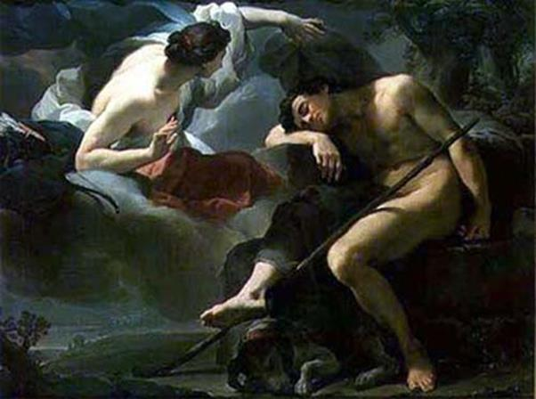

Nàng Séléné, nữ thần Mặt trăng, là con gái của Titan Hypérion. Titan Hypérion lấy Titanide Théia làm vợ, sinh được hai gái một trai. Trai là anh cả, tên gọi Hélios, tức thần Mặt trời. Gái là Séléné, nữ thần Mặt trăng, và Éos, nữ thần Bình minh hoặc Rạng đông. Cả ba anh em, mỗi người đều có một cỗ xe do những con thần mã kéo. Mỗi khi đêm đến, nàng Éos phải lên cỗ xe có ánh sáng ửng hồng của mình do một đôi thần mã vàng kéo, phóng ngay đến chân trời để báo cho thế gian biết Mặt trời đã lên đường. Còn thần Mặt trời theo lệ thường, ngày nào cũng như ngày nào, lên một cỗ xe vàng do bốn con thần mã mình đỏ như lửa kéo. Chúng mũi phun lửa, chạy cực kỳ nhanh, hàng ngày chạy vắt ngang qua bầu trời từ Đông sang Tây. Chạy như thế suốt một ngày ròng rã, khi chiều hết là cỗ xe hạ xuống dừng tại Đại dương. Và đêm hôm ấy thần Hélios lên một con thuyền độc mộc trở về biển Đông để ngày hôm sau từ phương Đông, chờ khi ánh sáng ửng hồng của nàng Éos báo tin cho thế gian xong xuôi, thần Hélios lại bắt đầu cuộc hành trình cho một ngày mới.
Trong ba anh em, về đường tình duyên, thì nàng Séléné gặp phải một chuyện rất đáng buồn. Nàng yêu chàng Endymion rất nồng thắm, tha thiết nhưng lại là một mối tình thầm lặng và tuyệt vọng. Endymion là một chàng trai cường tráng xinh đẹp. Người thì bảo chàng là vua xứ Élis, người thì bảo chàng là một cung thủ chuyên vào rừng săn bắn. Nhưng theo số đông, thì Endymion là một chàng chăn chiên. Chàng chăn chiên này có một vẻ đẹp hiếm có, đẹp đến nỗi nữ thần Mặt trăng-Séléné đem lòng yêu dấu và ước mơ được cùng chàng kết bạn trăm năm. Nhưng Endymion chẳng biết điều đó. Anh chỉ biết rằng mình trẻ đẹp và chỉ ước mơ có mỗi một điều là được trẻ đẹp mãi mãi. Anh cầu khấn thần Zeus. Chấp nhận lời cầu xin của anh, thần Zeus giáng xuống đôi mắt anh một giấc ngủ, một giấc ngủ triền miên hết ngày này qua ngày khác, tháng này qua tháng khác, năm này qua năm khác. Chỉ có thế Endymion mới giữ mãi được vẻ xinh xắn, trẻ trung. Nàng Séléné được tin đó rất đỗi buồn rầu. Nàng cưỡi xe song mã, cỗ xe có đôi ngựa trắng muốt như tuyết đi xuống trần. Nàng tới ngay động Latmos huyền diệu, nơi chàng Endymion đang chìm đắm trong giấc ngủ vĩnh hằng. Séléné đến ôm lấy chàng, phủ lên người chàng những chiếc hôn âu yếm. Nàng đưa tay vuốt ve trên thân chàng, nằm xuống bên chàng nghe tiếng tim chàng đập và say sưa uống hơi thở nồng ấm của chàng. Nhưng chàng Endymion nào có hay có biết rằng chàng đang được hưởng mối tình trong sáng hiền dịu của Séléné. Chàng vẫn cứ ngủ say như người chưa từng được ngủ bao giờ và không ai có tài gì đánh thức chàng dậy ngoài thần Zeus. Chính vì mối tình thầm lặng, tuyệt vọng này mà Séléné bao giờ cũng có một vẻ mặt đượm buồn. Năm tháng cứ thế trôi đi, Endymion vẫn ngủ triền miên và nàng Séléné vẫn giữ mãi nỗi buồn của mối tình thầm lặng và tuyệt vọng. Những đêm trăng, trăng lên đầu núi rồi trải ra ánh sáng trong xanh bằng bạc, đượm buồn của mình xuống những sườn núi, và thung lũng, người xưa bảo đó là nàng Séléné đang đến với Endymion, đang vuốt ve trên thân hình yêu dấu của chàng, và âm thầm đau khổ vì mối tình trong sáng thiết tha nhưng tuyệt vọng.

Séléné đến thăm ENDYMION
Lại có người kể, không phải thần Zeus làm cho Endymion ngủ mà chính nàng Séléné, bằng pháp thuật của mình làm cho chàng ngủ để không bao giờ bị mất chàng, để nàng có thể được tự do tới thăm chàng. Một nguồn khác kể Séléné đã ru Endymion trong một giấc ngủ triền miên là ba mươi năm. Sau này hai người ăn ở với nhau sinh được... năm mươi con! Theo các nhà nghiên cứu, con số đó tương ứng với con số năm mươi tuần của lịch Hy Lạp cổ. Lại có một cách kể khác: thần Zeus xúc động trước vẻ đẹp tươi tắn trẻ trung của chàng chăn chiên Endymion nên đã bắt chàng lên thế giới Olympe, như xưa kia đã bắt Ganymède, để làm người phục vụ cho các thần. Ở trên thế giới tuyệt diệu đó Endymion đã phạm một tội rất lớn. Chàng xem ra có tình ý với nữ thần Héra. Chẳng rõ câu chuyện cụ thể ra sao nhưng thần Zeus thoáng thấy như vậy và nổi trận lôi đinh, giáng luôn một đòn trừng phạt: nhấn chìm Endymion vào một giấc ngủ triền miên vĩnh viễn.
Tục thờ cúng thần Mặt trời và thần Mặt trăng có từ thời đại dã man. Sau này khi nước Hy Lạp bước vào chế độ chiếm hữu nô lệ, nữ thần Mặt trăng-Séléné được đồng nhất với nữ thần Artémis rồi đồng nhất cả vôi nữ thần Hécate và nữ thần Perséphone.
Trong văn học châu Âu ngày nay, Endymion trở thành một biểu tượng chỉ người thanh niên xinh đẹp, người đẹp trai. Còn trong đời sống thì hình như những mối tình thầm lặng và tuyệt vọng đều đẹp, đều êm ái, nhẹ nhàng, bàng bạc như ánh trăng đều bị “nhiễm” phải cái nỗi buồn man mác của nữ thần Mặt trăng-Séléné.